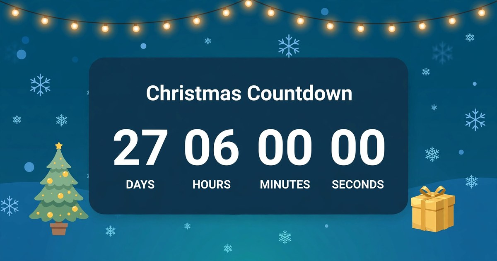

How to Create a Christmas Countdown Online
Count down the hours to Christmas morning, the end of a sale, or the roast in the oven — free, no signup, right in your browser.
November 28, 2026 · 6 min read

To create a Christmas countdown online, open ToolsHub's free Timer & Countdown, type the hours, minutes and seconds left until the moment you are counting down to, and press Start. The timer counts down second by second, then sounds three beeps and changes the browser tab title when time is up. Christmas Day 2026 is Friday 25 December — 27 days from today, Saturday 28 November — so this is the tool for the final stretch: the last hours of Christmas Eve, the end of a sale, or the Christmas dinner in the oven.
What the Timer & Countdown does
The Timer & Countdown is a simple countdown timer with three fields: Hours (0 to 99), Minutes (0 to 599) and Seconds (0 to 59). It opens with 5 minutes already set — 00:05:00 — so a quick timer is one tap away. Five preset buttons set 1, 5, 10, 15 or 30 minutes instantly, and you can type any other length into the fields instead.
The same button starts and pauses the timer, so pausing and resuming is one click, and Reset puts the display back to whatever the fields currently hold. When the countdown reaches zero you hear three beeps and the browser tab title changes to "Time's up!", with the same message shown under the timer. If you press Start with all three fields at zero, the tool shows a note: "Please set a time greater than zero." Everything runs in your browser — no signup, no app, and nothing you type is sent anywhere.
How far away is Christmas — and the other festive dates?
Before you set a timer, work out the gap. From Saturday 28 November 2026:
- Cyber Monday, Monday 30 November 2026: 2 days away — the last big sale day of Black Friday week.
- Christmas Day, Friday 25 December 2026: 27 days away — 648 hours, 38,880 minutes, or 2,332,800 seconds.
- New Year's Eve, Thursday 31 December 2026: 33 days away.
- New Year's Day, Friday 1 January 2027: 34 days away.
One honest limit: this timer is built for hours-long countdowns, not for all 27 days at once. Its hours field goes to 99, and the countdown only runs while the browser tab stays open — close the tab and the countdown stops. So use it for the moments that matter: the final hours before Christmas morning, the last hours of a sale, a cooking timer, or a gift-wrapping sprint.
Create a Christmas countdown in 5 steps
- Work out the gap. Count the hours, minutes and seconds until the moment you are counting down to — the examples below show the maths.
- Open the Timer & Countdown. It opens with 5 minutes set; ignore that and type your own time.
- Type the hours, minutes and seconds. For anything up to 30 minutes, tap a preset button instead — 1, 5, 10, 15 or 30 minutes.
- Press Start. The display counts down in hours, minutes and seconds. Press the same button to pause, and press it again to resume from where you stopped.
- Wait for the three beeps. At zero the timer beeps three times, the tab title changes to "Time's up!", and the note appears under the timer. Press Reset to set the next countdown.
Worked example 1: the last hours of Christmas Eve
Christmas Eve dinner finishes at 6 in the evening on Thursday 24 December, and you want the timer to ring at midnight, when Christmas Day begins. From 18:00 to 00:00 is 6 hours, so type 6 into Hours, 0 into Minutes and 0 into Seconds. The display reads 06:00:00 — that is 6 × 3,600 = 21,600 seconds. Press Start, and the timer rings at midnight.
Worked example 2: the Cyber Monday sale ending
Cyber Monday ends at midnight on Monday 30 November, and it is Saturday 28 November, 9 in the morning. The gap is 2 full days plus the hours from 09:00 to 23:59: 48 hours + 14 hours 59 minutes = 62 hours 59 minutes. Type 62 into Hours, 59 into Minutes and 0 into Seconds, and the display reads 62:59:00 — that is 62 × 3,600 + 59 × 60 = 226,740 seconds. The timer rings with one minute to spare before the sale ends, which is exactly when you want the reminder.
Worked example 3: the Christmas dinner roast
The roast needs 3 hours 30 minutes in the oven. Type 3 into Hours, 30 into Minutes and 0 into Seconds, and the display reads 03:30:00 — 3.5 × 3,600 = 12,600 seconds. For a 45-minute bake, note that the preset buttons stop at 30 minutes, so type 45 into the Minutes field instead — the field accepts up to 599, which is just under 10 hours. A 30-minute gift-wrapping sprint is one tap on the 30-minute preset: 1,800 seconds, no typing at all.
5 mistakes that ruin a countdown
- Closing the tab. The countdown lives in the open browser tab. Close the tab or the browser and it stops — keep the tab open until the moment you are counting down to.
- Setting a multi-day countdown. The timer is built for hours-long countdowns, and its hours field goes to 99. A 27-day Christmas countdown does not belong in one timer — count the days separately and use the timer for the final hours.
- Typing minutes into the Hours field. A 90-minute job is 1 hour 30 minutes, not 90 hours. Type 1 into Hours and 30 into Minutes — 90 in the Hours field would ring in almost four days.
- Forgetting the sound. The three beeps only help if your sound is on and the tab is not muted. If you are counting down in another room, check the volume first — the tab-title change is the backup, not the alarm.
- Starting with all zeros. Pressing Start with 0 hours, 0 minutes and 0 seconds does nothing except show the note "Please set a time greater than zero." Check the display reads the time you meant before you press Start.
Frequently asked questions
How many days are left until Christmas 2026?
From Saturday 28 November 2026, there are 27 days until Christmas Day, Friday 25 December 2026. That is 648 hours, 38,880 minutes or 2,332,800 seconds.
Can the Timer & Countdown count down all 27 days to Christmas?
Not practically. The timer runs only while its browser tab stays open, and it is built for hours-long countdowns — its hours field goes to 99. Use it for the final stretch instead: the last hours of Christmas Eve, the end of a sale, or a cooking timer.
Does the countdown keep running if I close the tab?
No. The countdown lives in the open browser tab, so closing the tab, or the browser, stops it. Keep the tab open until the moment you are counting down to.
Is the Christmas countdown free, and do I need to sign up?
Yes, completely free, with no sign-up and no app to install. Everything runs in your browser, and nothing you type is sent anywhere.
Related tools: Timer & Countdown · Stopwatch · World Clock · Pomodoro Timer · Discount Calculator